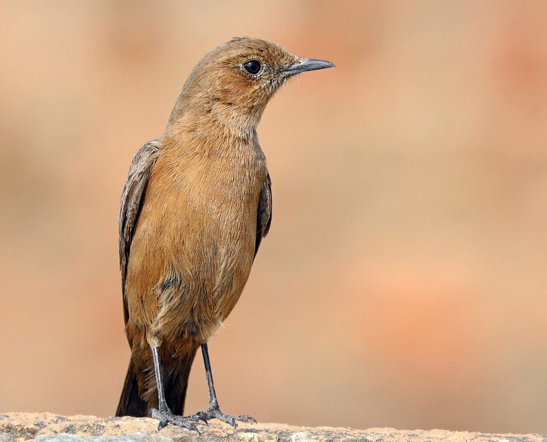

काला पिद्दाIndian Chat
Oenanthe fusca · Muscicapidae · BRD-0169

- Scientific name वैज्ञानिक नाम
- Oenanthe fusca (Blyth, 1847)
- Family कुल
- Muscicapidae
- Hindi हिंदी
- काला पिद्दा
- Local names स्थानीय नाम
- kala pidda, kaala pidda, indian chat, brown rock chat
- Status here यहाँ की स्थिति
- native
- Movement आवागमन
- Resident, here all year
- Known from कहाँ दर्ज
- Others have published records from the Basti–Ayodhya districts बस्ती–अयोध्या के ज़िलों से दूसरों के प्रकाशित अभिलेख
- IUCN IUCN
- LC
- Review समीक्षा
- audited and independently read
When to look कब देखें
Present all year. साल भर मौजूद।
Uses and possibilities उपयोग और संभावनाएँ
Drawn from the documented uses in the profile below, where each is labelled traditional, current or a research lead. All uses →
Tell it apart from इनसे अलग पहचानें
काला पिद्दा / Indian Chat
Oenanthe fusca (Blyth, 1847) — Muscicapidae
काला पिद्दा — एक छोटी काली चिड़िया जो खेतों के बीच पत्थरों और टूटे घरों पर बैठती है। इसका रंग बिल्कुल काला होता है, सिर्फ़ पंखों के नीचे कुछ सफ़ेद पर निकलता है। यह चिड़िया बहुत फुर्तीली होती है — जब आप पास जाते हो तो एक पत्थर से दूसरे पत्थर पर कूद जाती है। इसे देखना हर जगह आसान नहीं है, पर जहाँ पत्थर हैं वहाँ इसे ढूँढो। गाँवों के आस-पास टूटे-फूटे घरों पर भी यह रहती है।
Quick Identification त्वरित पहचान
| Feature | Description |
|---|---|
| Size | Small, compact; 13–14 cm long |
| Plumage male | Overall dark blackish-brown to black; some white at base of tail |
| Plumage female | Slightly lighter brown than male |
| Tail | Black with white at base (diagnostic white tail patch) |
| Wings | Dark; no wing bars; white patch at base of flight feathers sometimes visible |
| Bill | Short, black, pointed |
| Legs | Black; relatively long |
| Behaviour | Active, hops on rocky ground; often on exposed perches |
| Posture | Upright; frequently pumps tail |
Field tip: In rocky habitats or on old walls and ruins, look for a small, dark (nearly black) bird with a compact shape and an upright posture. The white at the base of the tail becomes visible when the bird hops or flies. The dark coloration and habitat make it relatively inconspicuous until it moves.
हिंदी — कैसे पहचानें: बिल्कुल काली छोटी चिड़िया। पत्थरों पर बैठती है। पूँछ को ऊपर-नीचे करती है। सफ़ेद पूँछ तभी दिखता है जब उड़ता है।
Morphology आकारिकी
Biometrics:
| Measurement | Range |
|---|---|
| Total length | 130–140 mm |
| Wing (folded) | 60–68 mm |
| Tail | 45–55 mm |
| Bill | 10–12 mm |
| Tarsus | 18–22 mm |
Male plumage: Overall dark brownish-black; darkest on head, back, and wings. The under tail coverts are dark, but the tail itself shows white at the base (inner webs of tail feathers and tail coverts are white, visible as a white patch when the tail is spread or in flight). Flight feathers dark brown; some white visible at the base of the primaries when wings are spread.
Female plumage: Slightly paler than male, with a brownish cast to the otherwise dark plumage. White tail patch present but sometimes less conspicuous than in males.
Underparts: Mostly dark; lighter on the belly and breast than on the back, but still within the dark brown to blackish range.
Bill: Short, pointed, black; adapted for gleaning insects from rock surfaces and soil.
Legs and feet: Black; moderately long for a bird of this size, adapted for hopping on rocky ground.
Eyes: Dark; moderate-sized.
Size relative to habitat: Among the smallest birds found in rocky habitats; noticeably smaller than a sparrow.
Sexes: Slight dimorphism, with males generally darker than females.
Vocalisations: Contact calls are harsh, chattering notes; alarm call is a loud chack-chack; song is a simple, warbled phrase delivered from a rock or perch.
हिंदी: छोटी चिड़िया, बिल्कुल काली। पूँछ सफ़ेद निशान होता है, जो उड़ते समय दिख जाता है।
Behaviour & Ecology व्यवहार और पारिस्थितिकी
The Indian Chat is a small, ground-dwelling insectivore that forages on rocky terrain and around human structures in arid and semi-arid habitats. It is generally solitary or found in pairs, and is highly active and vocal.
Foraging behaviour: Hops on rocky ground and on flat stone surfaces, picking insects and small invertebrates from the soil and from between rocks. Occasionally gleans insects from vegetation. Also captures insects in flight or by quick darting movements. Feeds primarily on ants, small beetles, grasshoppers, and other small arthropods.
Habitat use: Occupies rocky outcrops, exposed stone surfaces, ruins, and old buildings. Often found on the ground in cultivated areas where scattered rocks provide hunting habitat. Less commonly in dense vegetation; prefers open, rocky terrain.
Movement: Hop-based locomotion; does not typically run along the ground like larger chats. Can fly, but movement is often short hops between adjacent rocks or short flights to nearby perches.
Social behaviour: Generally solitary or in pairs; sometimes in small loose groups. Pairs may remain together year-round if they are residents.
Territoriality: Likely territorial during breeding season; behaviour in non-breeding season not well documented.
Seasonal movements: Considered a year-round resident throughout much of its range in India. Local movements may occur in response to availability of food or moisture.
हिंदी: अकेला रहता है या जोड़ा बनाता है। पत्थरों पर कूदता है। कीड़े खाता है।
Life Cycle / Phenology जीवन चक्र
| Stage / season | Notes |
|---|---|
| Breeding season | February–May (pre-monsoon and early monsoon); peak March–April |
| Nest | In rock crevices, holes in old buildings, or holes in the ground |
| Clutch size | 3–5 eggs; typically 4 |
| Incubation period | Approximately 12–14 days |
| Fledging period | Approximately 12–14 days |
| Brood | Usually one or two broods per season |
| Non-breeding season | June–January; birds may move locally or remain in territory |
| Moult | Not precisely known for this species; likely post-breeding (July–September) |
| Longevity | Unknown in the wild; likely 3–5 years |
Seasonal pattern in eastern UP:
- January–March: Breeding season begins; pairs establish territories; nest-building
- April–May: Breeding peak; eggs and young in nests
- June–July: Fledging of young; post-breeding moult may begin
- August–January: Non-breeding season; local movements possible; less vocal
- Year-round presence: Resident throughout the region where suitable habitat is available
हिंदी: फरवरी से मई तक अंडे देते हैं। पत्थरों के बीच घोंसला बनाते हैं। साल भर रहते हैं।
Host Plants or Prey आहार
Insectivorous diet:
- Ants (primary prey)
- Small beetles
- Small grasshoppers and crickets
- Small bugs
- Spiders
- Occasionally small lizards
The bird obtains most of its food from foraging on rocky ground and picking insects from stone surfaces.
हिंदी: चींटी, छोटी टिड्डी, छोटे कीट खाता है।
Predators / Natural Enemies शत्रु
- Raptors: Small hawks, particularly Shikra and Sparrowhawk; also possibly larger eagles
- Snakes: Particularly racer snakes and rat snakes in nests
- Corvids: Crows may harass or attack
- Predatory birds: Some other predatory birds may opportunistically prey on chicks or fledglings
हिंदी: बाज़, कौवे, साँप इसका शिकार करते हैं, विशेषकर अंडों और बच्चों को।
Agricultural / Human Relevance कृषि प्रासंगिकता
Beneficial predator of insects: The Indian Chat feeds on ants and other small arthropods, some of which are agricultural pests. Its activity in cultivated areas with scattered rocks may provide minor pest control benefits.
Protected under law: Like all wild birds in India, the Indian Chat is protected under the Wildlife (Protection) Act 1972, Schedule IV. Hunting or trapping is prohibited.
Cultural significance: Not documented to have specific cultural uses or importance in eastern UP.
No conflicts documented: The bird does not damage crops or cause agricultural harm.
हिंदी: यह विधि अधिनियम 1972 की अंतर्गत संरक्षित है। इसका शिकार करना कानूनी रूप से निषिद्ध है। खेतों के कीटों को खाता है।
Expected Locally स्थानीय रूप से अपेक्षित
Not a field record. Written from published accounts for eastern Uttar Pradesh. No confirmed local sighting yet — if you have seen it, that is what the atlas needs.
अभी तक स्थानीय पुष्टि नहीं। यह विवरण प्रकाशित स्रोतों से है, किसी अवलोकन से नहीं।
Not a field record. This species' presence in eastern UP is based on its known distribution in India. GBIF holds published records from the wider Awadh–Purvanchal plain and from Basti–Ayodhya districts.
ये दूसरों के प्रकाशित अभिलेख हैं, परियोजना के नहीं। यह पहले से दर्ज है।
Expected year-round in rocky habitats, ruins, and cultivated areas with scattered rocks throughout Basti district and eastern Uttar Pradesh. The bird is most easily found in areas with exposed stone surfaces — old temples, forts, ruins, or natural rock outcrops. In agricultural areas, it occurs where fields contain scattered stones or boulder-covered areas.
A dated photograph showing the bird on rocky ground or a ruin, with visible identifying features, would confirm a local record.
Distribution वितरण
Global range: Indian subcontinent; endemic to South Asia. Found throughout India in suitable rocky habitats.
In India: Widespread in rocky and semi-arid regions from the Himalayas to southern peninsular India. More abundant in drier regions; less common in wet or thickly forested areas.
In Uttar Pradesh: Recorded in rocky habitats throughout the state; more abundant in drier districts.
In Basti district / eastern UP: Occurs in rocky habitats, ruins, and cultivated areas with scattered stones; year-round presence in suitable habitat.
Research Questions शोध प्रश्न
- क्या काला पिद्दा सर्दी और गर्मी में एक ही जगह पर रहता है, या क्या यह मौसम के अनुसार दूसरी जगह चला जाता है?
- What is the territory size of breeding pairs, and how does this vary with habitat quality and food availability?
- How many chicks fledge per breeding season, and what is the juvenile survival rate in the field?
- क्या इस चिड़िया के शिकारियों में बाज़ और कौवे सब से बड़े दुश्मन हैं?
- How does the foraging behaviour and diet composition change seasonally?
- क्या काला पिद्दा घास के मैदानों में अच्छी तरह से रह सकता है, या क्या इसे पत्थरों की ज़रूरत है?
Similar Species मिलती-जुलती प्रजातियाँ
| Species | Key Difference | Hindi | |
|---|---|---|---|
| [[pied_bushchat\ | Pied Bushchat]] (Saxicola caprata) | Similar size and habitat but male has white patch on back and white underparts (not all-dark) | तितर-बितर चिड़िया, आधी सफ़ेद |
| Stolid Flycatcher (Muscicapa muttui) | Larger; brown rather than black; different behaviour (sallying for insects) | बड़ी पिद्दा, भूरी |
Field rule: A small, all-dark (nearly black) bird with white at the base of the tail, hopping on rocky ground in arid or semi-arid habitats — this is the Indian Chat. Other small dark birds in similar habitats should be examined for other distinguishing features (e.g., white back patch in Pied Bushchat).
Taxonomy & Classification वर्गीकरण
Original description. The species was described by Edward Blyth in 1847 in the Journal of the Asiatic Society of Bengal as Saxicola fusca. The genus Oenanthe was assigned later. Type locality is India (exact location not specified).
Subspecies. No subspecies are currently recognised within Oenanthe fusca; the species is treated as monotypic.
Family and order placement. Order Passeriformes (perching birds); family Muscicapidae (Old World flycatchers). The genus Oenanthe includes the wheatearsand chats, with approximately 20 species distributed across Europe, Asia, and Africa.
Phylogenetic notes. Oenanthe fusca is endemic to the Indian subcontinent and represents a sister taxon to the widespread Eurasian Wheatear (Oenanthe oenanthe) and related northern species.
IUCN status rationale. The species is assessed as Least Concern (LC) due to its wide range and stable population. It is adaptable to human-modified landscapes and is not threatened by hunting or habitat loss in most of its range.
हिंदी: भारत ही का रहने वाली चिड़िया है। दुनिया में और कहीं नहीं पाई जाती।
Photo Gallery फोटो गैलरी
No photos yet — add field photos to media/species/indian_chat/ and run node scripts/sync_photos.js.
Wanted photos:
- Male on rocky ground showing dark plumage
- In flight showing white tail patch
- Pair together on a perch
- At nest site or with chick
References संदर्भ
- Blyth, E. (1847). Journal of the Asiatic Society of Bengal 16: 453. [original description as Saxicola fusca]
- Ali, S. & Ripley, S.D. (1973). Handbook of the Birds of India and Pakistan. Vol. 8 (Warblers to Redstarts). Oxford University Press, Delhi. Pp. 71–73.
- Grimmett, R., Inskipp, C. & Inskipp, T. (2011). Birds of the Indian Subcontinent: The Ripley Guide. 2nd edn. Helm Identification Guides, Oxford. Vol. 2, pp. 389–390.
- GBIF Occurrence Data — Oenanthe fusca, India (2024).
- Rasmussen, P. C. & Anderton, J. C. (2012). Birds of South Asia: The Ripley Guide. 2nd ed. Smithsonian Institution and Lynx Edicions.
- BirdLife International. Oenanthe fusca. IUCN Red List of Threatened Species. https://www.iucnredlist.org/
Source file: species/fauna/birds/indian_chat.md